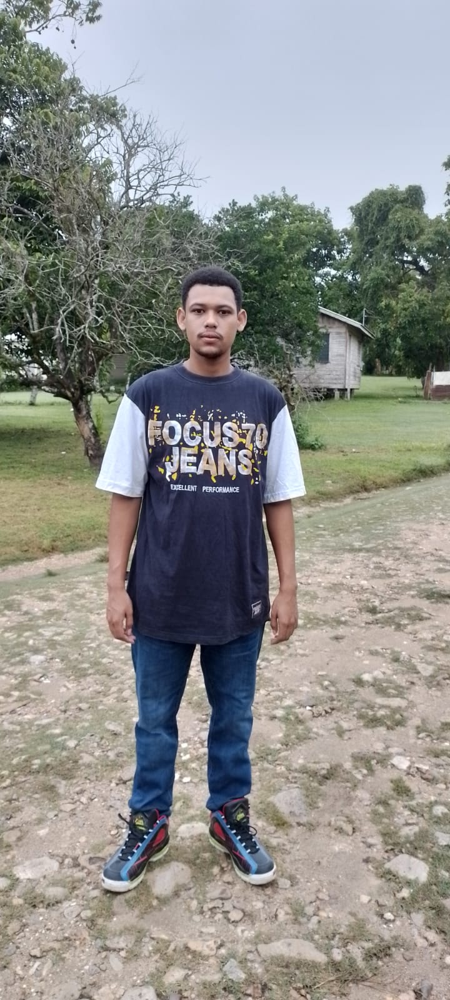

About Me
 Giyan Perez is currently studying at the University of Belize. He attended St. Andrews Anglican primary school and graduated from Sacred Heart high school. He majors in Information Technology at the University of Belize. He aspires to one day be a programmer and software developer.